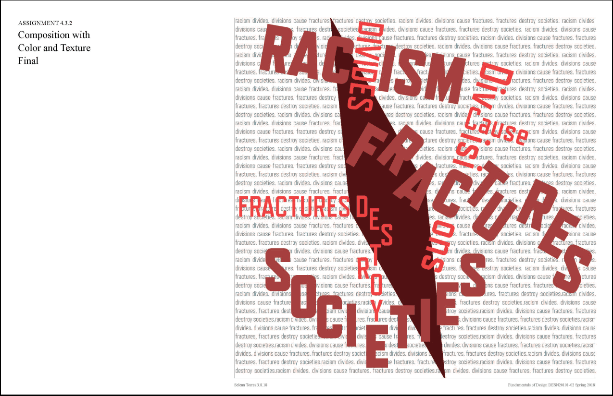
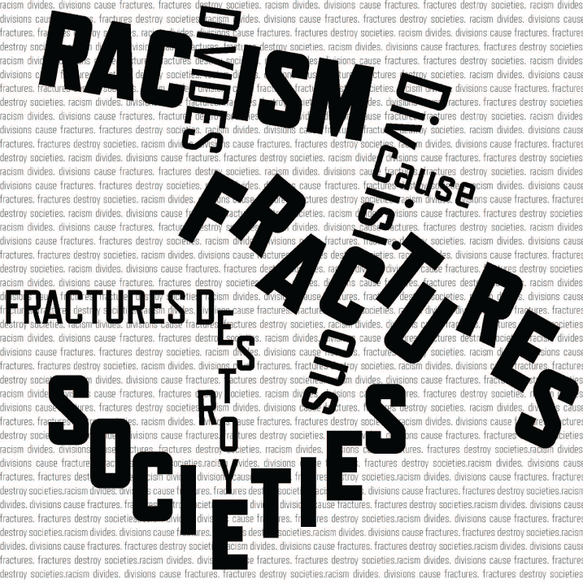

The Project
This project explored how shapes and colors could be used to bring meaning to words. Three phrases were used: racism divides, fractures destroy societies, and divides cause fractures. We started in black and white to see just how the words could be used on their own. We then added in color and shape to emphasize these words. The use of color and shapes were limited to three colors and one type of shape
The Process
01
Grayscale: The Starting Point
02
Bold Color: The Turning Point

03
Grayscale: Narrowing it Down
04
Refining with Color
05
Deep Wounds: The Final Product